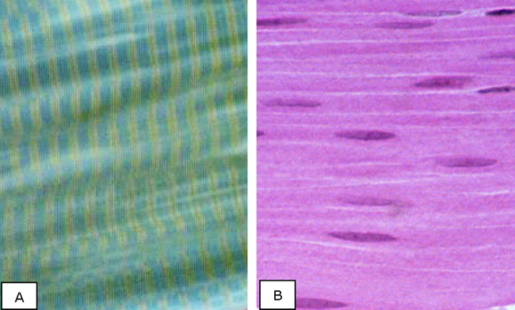

Typering van spierweefsel:
A) Bepaal of je dwarsstreping ziet:
- Op een overlangse doorsnede van spiercellen kan je nakijken of ze een dwarsstreping vertonen.

(A) Overlangse doorsnede van enkele skeletspiercellen, als voorbeeld van dwarsgestreepte spiercellen. Je ziet een duidelijke afwisseling van donkere (met deze kleuring blauwe) A-banden en lichte I-banden. Meestal zie je enkel deze banden op een routine lichtmicroscopische kleuring. Dit is de dwarsstreping. Op dit beeldje vind je centaal in de lichte banden ook nog de
Z-schijven terug (okergeel). In het midden van de A-band zie je op sommige plaatsen ook nog een lichtere H-band. (B) Overlangse doorsnede van verschillende gladde spiercellen. Het cytoplasma is vrij egaal van structuur en vertoont geen dwarsstreping.
Z-schijven terug (okergeel). In het midden van de A-band zie je op sommige plaatsen ook nog een lichtere H-band. (B) Overlangse doorsnede van verschillende gladde spiercellen. Het cytoplasma is vrij egaal van structuur en vertoont geen dwarsstreping.
Vordering zelfstudie spierweefsel: